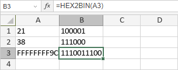

HEX2BIN Funkcija
Funkcija HEX2BIN je jedna od inženjerskih funkcija. Koristi se za konvertovanje šesnaestog broja u binarni broj.
Sinaksa
HEX2BIN(broj, [cifre])
Funkcija HEX2BIN ima sledeće argumente:
| Argument | Opis |
|---|---|
| broj | Šesnaesterocifreni broj koji unesete ručno ili se nalazi u ćeliji na koju se referencirate. |
| cifre | Broj cifara za prikaz. Ako se izostavi, funkcija koristi minimalni broj cifara. |
Napomene
Ako argument nije prepoznat kao šesnaesterocifreni broj, sadrži više od 10 karaktera, binarni broj zahteva više cifara nego što ste naveli, ili je naveden broj cifre manji ili jednak 0, funkcija vraća grešku #NUM!.
Kako primeniti funkciju HEX2BIN.
Primeri
Slika ispod prikazuje rezultat koji vraća funkcija HEX2BIN.
